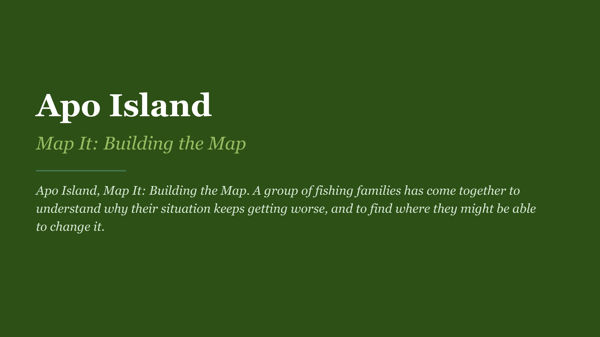
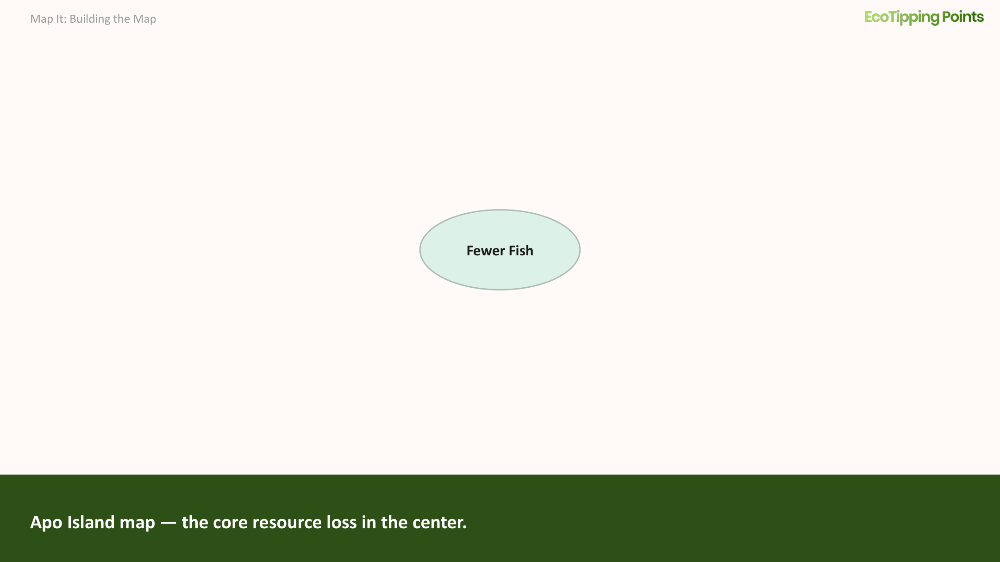
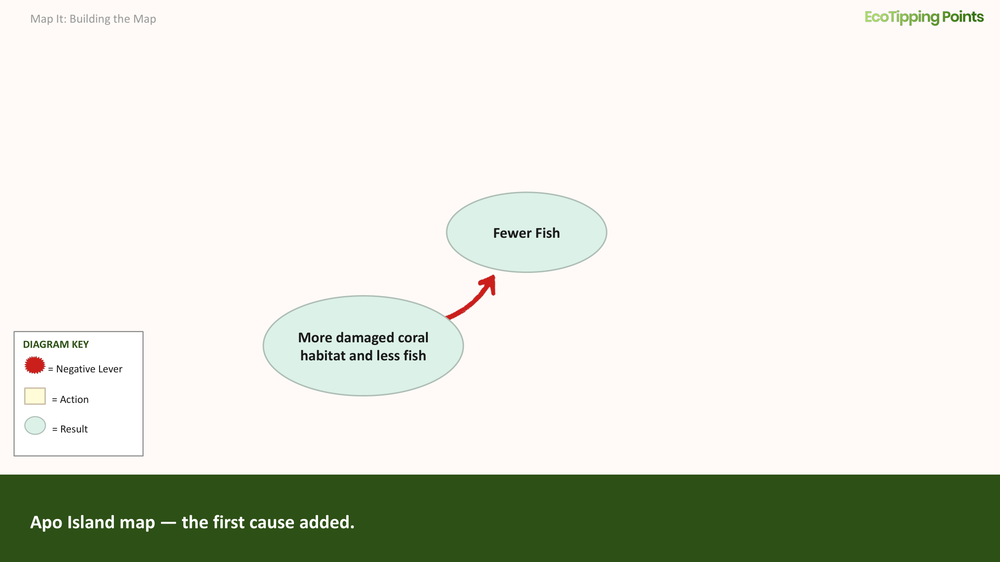
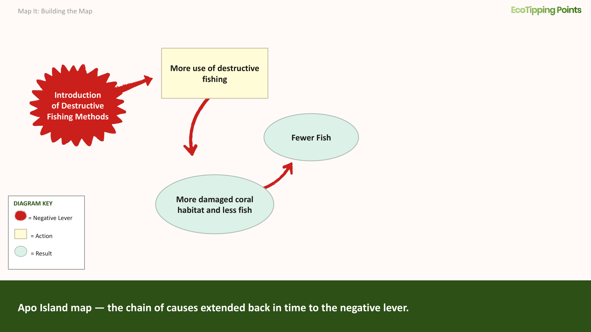
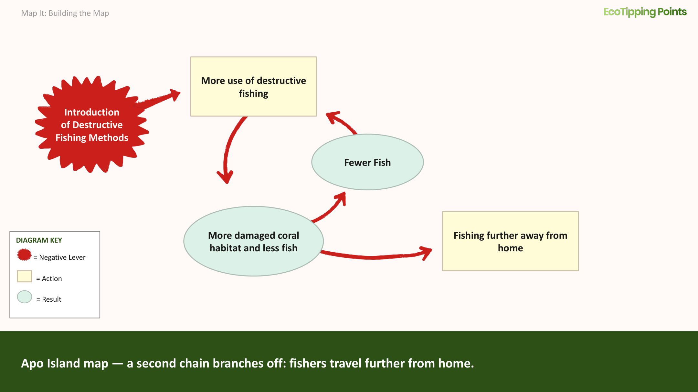
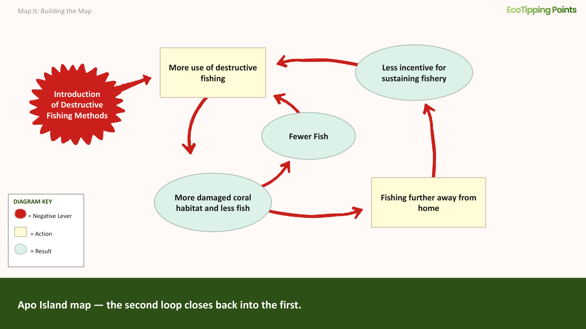
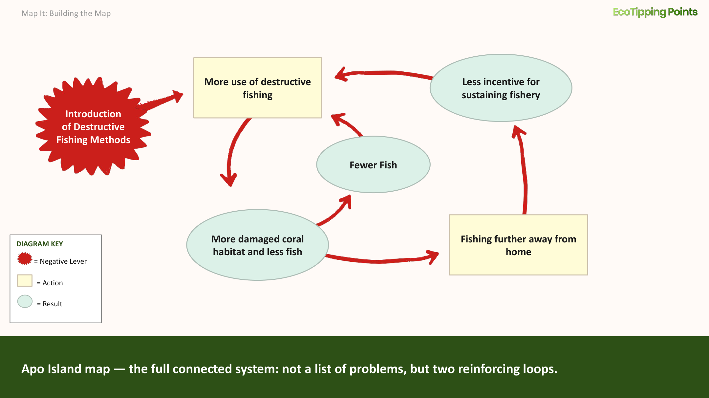
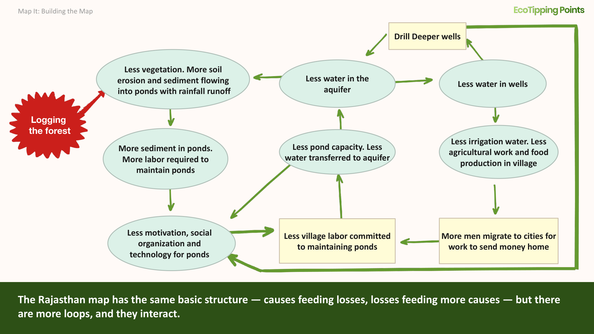

Your Goal
Come away with a boxes-and-arrows diagram that exposes the relationships of cause and effect across the human-environment system and shows where vicious cycles are driving decline.
Why are vicious and virtuous cycles key to systemic change?
This 1-minute video explains how vicious and virtuous cycles drive negative and positive change.
View ScriptHide Script
Feedback loops are the mechanism behind tipping points.
A feedback loop is a circular chain of cause and effect. A change in one part of a system triggers changes elsewhere, which circle back and amplify the original change.
Consider a fishing community facing declining stocks. As fish become harder to find, fishers put in more effort: more boats, longer hours, more nets. That effort depletes the fishery faster. Stocks fall further, effort increases again. This is a vicious cycle: each response makes the problem worse.
Vicious cycles are powerful. Breaking out of them is difficult. Actions that aren’t strong enough to reverse the cycle may ease certain conditions temporarily; however, the decline continues. When fishing pressure drops enough and spawning grounds are protected, the cycle can flip. Fish populations begin to rebuild. A recovering fishery reduces the pressure to overfish. Lower pressure allows further recovery. The same structure that drove decline now drives restoration.
Why Diagram the Problem
Diagrams are a vital tool for turning systems thinking into effective action. They expose the relationships of cause and effect spread across the human-environment system, and the potential sites for intervention. This section illustrates how to diagram the connections between current and historical elements of a problem and how to recognize where self-reinforcing feedback loops are coming into play. The negative tipping point lever that triggered the problem is often too far in the past to alter, and it may no longer be a cause of the problem. However, the vicious cycles it set in motion are responsible for the problem because they are driving it, and those vicious cycles can be reversed with the right set of actions.
In the case of Rajasthan, clear cutting of forests by timber companies was the negative tipping point lever that led to the soil erosion and runoff that made it increasingly difficult to maintain the traditional dams channeling rainwater into the aquifer. The clear cutting of aged forests, carried out during the switch of power as India gained independence from England, cannot be reversed. But the vicious cycles that logging set in motion could be turned around. What are those vicious cycles? And where are they located in the human-environment system? Creating a diagram helps locate points in the system where vicious cycles are driving decline, and places in the system that are most open to change if positive tipping point levers are put into action.
Seeing the System in Action
How do vicious cycles cause collapse? This video illustrates how a vicious cycle of collapse unfolded in Apo Island.
View ScriptHide Script
The introduction of destructive fishing methods, such as dynamite, to the Philippines was a tipping point lever that set in motion a serious decline in the nation’s coral reef fisheries, threatening the survival of fishing villages that had relied upon coral ecosystems for generations. Destructive fishing could catch a lot of fish, but it killed too many fish, and also damaged the coral habitat, reducing fish populations even further and forcing fishermen to increase their destructive fishing to catch enough fish at all. This created a vicious cycle of destructive fishing, damaged coral habitat, and fewer fish, leading to even more destructive fishing. A decline in coral and fish near fishing villages created a second vicious cycle because fishermen were forced to travel further and further away from home to find fishing areas that were not as damaged, and they ramped up their use of destructive methods because they had very little incentive to sustain fishing grounds that were not their own. The two vicious cycles reinforced each other to drive coral reefs and their fish populations toward collapse. The Philippine government enacted laws prohibiting destructive fishing, but it was not able to enforce the laws over such a vast area.
For contextWatch the Apo Island story on marine sanctuary restoration in the Philippines (7 min)
Creating a Diagram
To create a diagram you will need a list of losses, problems, changes, potential triggers, and other experiences that have been part of the story of decline you are mapping. The elements of the problem have historical roots, and so systems thinking requires reviewing the history of the problem to find actions and events connected to the current situation. When you are ready to map, focus less on including every loss, pressure and impact, and more on exposing the connections between the key elements creating the self-reinforcing vicious cycles. It is helpful to distinguish graphically between actions people are taking, and resulting impacts on the ecosystem or social system. In our step-by-step example of how to map the elements of decline, we use rectangles for actions taken by the community and ovals for their resulting impacts on the human-environment system.
There is not one formula for where to begin when creating a diagram. If the negative tipping point lever is obvious, you can begin there and then identify the impacts of that change, and then what further impacts and actions were caused by those consequences. If the negative tipping point lever is not clear, then pick one manifestation of the problem, usually a core resource loss, and draw it in the center to begin your map. Let it unfold from there by going back in time to add what action caused the event, and then even further back in time to add what stimulated that action. The earliest cause in the chain, the event or change that started the whole sequence, is the negative tipping point lever responsible for setting in motion a shift in the human-environment system. Once you have worked your way back to the negative tipping point lever, you can begin to look at the actions and impacts associated with decline in the core resource, and what consequences they had until you have included most elements you recognize as part of the problem. This allows you to build a full picture of the connections that are currently cycling through the human-environment system and creating the vicious cycles driving decline.
As you build your diagram, refer back to the list of elements that you recognize as part of the problem, to see how they are fitting into the system. No impact is too small to consider placing on the map, because even a seemingly insignificant impact may be a critical element of a powerful feedback loop. Any element in your diagram may lead to different actions and impacts, and some of those elements may loop back to something already in the chain of effects. This is when the diagram starts showing vicious cycles coming into play. Highlight these vicious cycles: they are the driving force of decline and the most important places in the system to break. Some feedback loops become especially powerful because they feed into other loops, forming interconnected and mutually reinforcing vicious cycles. These amplifying vicious cycles intensify impacts with such force that destructive changes cascade through the human-environment system and perpetuate decline. The negative tipping point lever that set decline in motion may not be open to change, but the amplifying vicious cycles it triggered may be sites in the system for effective intervention.
Step by Step: Mapping a Negative Tipping Point on Apo Island
We use the example of Apo Island to illustrate, step by step, one way a negative tipping point can be mapped.

-
If the negative tipping point lever is obvious, you can begin there. If not, then pick one item, usually a core resource loss, and draw it in the center to begin your map.

-
What caused the core loss? Add the cause, noting whether it is an action or an impact. If it is an impact, you know that you have not arrived at the root causes.

-
Continue adding causes as you move backwards in time towards root causes. If a cause is an action, it does not necessarily mean it is the negative tipping point lever. It may be a response to prior actions and effects.

-
What happened before that? Continue back through time until you arrive at an event or set of events that seems responsible for triggering the systemic change. You can label the triggers as the negative tipping point lever.
-
Then look forward in time to how one thing affected another. What happened next? If you see a resulting impact aggravating the problem that caused it, you have revealed a self-reinforcing vicious cycle where the worse things get the worse it makes everything else.

-
Many elements of your diagram will have more than one resulting impact. Lead those separate directions, so that you can follow the multiple chains of effects being created.

-
As you see new chains of effects unfold, new vicious cycles will likely feed back into earlier vicious cycles, reinforcing and amplifying each other. It is these amplifying vicious cycles that spiral a system into decline.

-
There are many hardships and losses that are direct symptoms of the problem, but they may not end up on your map because they do not cause new problems that drive decline. In complex situations, this may take some trial and error with multiple maps to focus on elements that are part of the vicious cycles driving decline.
A More Complex Case in Rajasthan
This diagram for a village in semi-arid Rajasthan that faced the loss of precious irrigation water is more complex. Although diagrams like this can take more effort to understand, they provide an accurate picture of what the community is facing. The details will help you find parts of the system to target with a positive tipping point lever for setting restoration in motion.

For contextWatch the Gopalpura story on rainwater harvesting in Rajasthan, India (11 min)
Ingredients for Success
Map It in Practice →
How to run a community mapping session using this framework: session structure, prompting questions, and field notes on group dynamics.
Next Steps
With the vicious cycles visible on paper, the next step is to identify where you can intervene to reverse them.
Continue to Reverse It